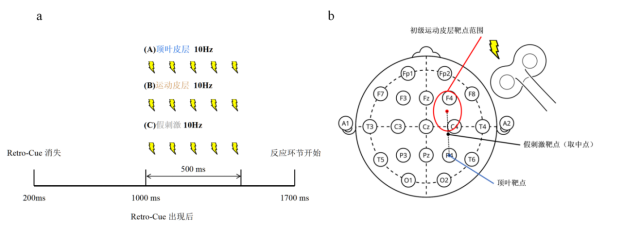
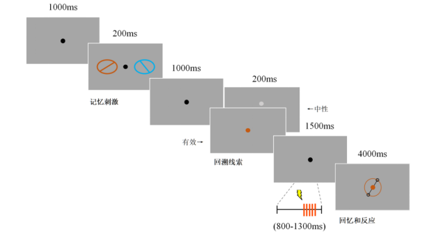

01
TMS–EEG · Visual working memory
Parietal and Motor Cortical Contributions to Visual Working Memory
How do parietal and motor cortical regions contribute to visual working memory under different states of attentional prioritization?
Using a retro-cue working-memory task, I designed an online TMS study targeting the right posterior parietal cortex and primary motor cortex. An exploratory behavioral study revealed distinct response-time patterns following stimulation at the two sites, with preliminary evidence of cue-dependent changes in recall precision after motor-cortex stimulation. Concurrent TMS–EEG experiments are now examining the corresponding neural dynamics.
- Approach
- Retro-cue task, online TMS, concurrent TMS–EEG
- Status
- Behavioral study completed; TMS–EEG data collection in progress

